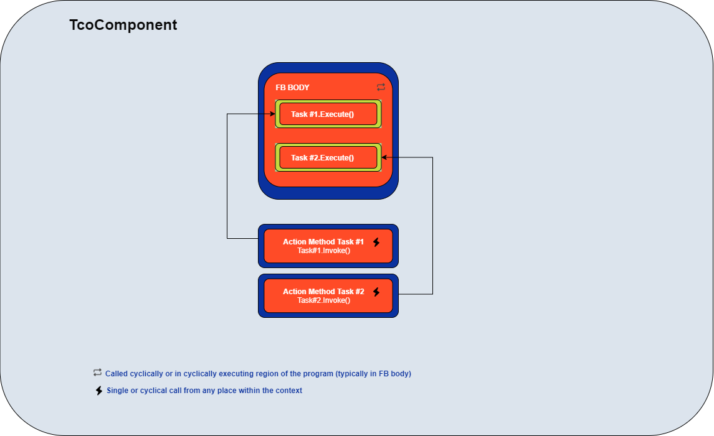

TcOpen Framework
TcOpen framework provides blocks for building industrial applications and creating reusable software components for various devices like Pistons, Drives, Robots, Vision systems, etc.
Part of the framework is a series of classes/blocks for crafting applications using techniques known from software engineering. TcOpen is created in the OOP paradigm and takes full advantage of object-oriented design allowed by CoDeSys/TwinCAT 3 implementation of IEC-61131-3.
The ultimate goal of this initiative is to provide automation engineers with well-designed, testable, scalable, and reusable blocks to facilitate the development, commissioning, and maintainability of the industrial application software.
TcOpen application dissection
The following diagram shows schematics of a simple TcOpen application. The station contains a manipulator with a single drive for a horizontal axis movement, a pneumatic piston for vertical axis movement, and a pneumatic gripper.

The blocks of an TcOpen application require to be nested into a root block called Context that derives from TcoContext or implements ITcoContext interface. In our case, it is AppContext block.
The next level is Station001 that derives from TcoObject (about TcoObject later). It suffices to say the TcoObject is the base block of each other block in the TcOpen framework.
The components (drive, pistons) are encapsulated into a single structure, Station001_Components (HorizontalDrive, VerticalPiston, Gripper) and it that also derives from TcoObject.
Besides components, the station contains two Sequences, Station001_GroundMode that brings the manipulator to the ground state (home positioning), and Station001_AutomatMode that performs the manipulator's activities in automatic mode.
The components (Drive, Piston) have a set of tasks (MoveHome, MoveAbsolute, etc.). All tasks are or derive from TcoTask within which the actions are running. The TcoTask work with two methods in tandem: Invoke fires the execution (in our case, this occurs in the sequences) and Execute with an implementation in the components block, that run the required action.
TcoCore library
TcoCore library contains basic classes for building TcOpen applications (components, tasks management, coordination primitives). The default namespace for this library is TcoCore. All types in this library have Tco prefix for classes and ITco and for interfaces.
Context
(TcoContext : ITcoContext)
TcoContext is an entry point for an application. It represents a station, functional unit, or a whole application. The Main method of the context is the root of the call tree.
TcOpen application requires to have at least one TcoContex.
Context can encapsulate units of different scope and size. Each context is an isolated island that manages only the objects declared within its declaration tree. Each TcoObject (more later) can have only one context. Inter-contextual access between the objects is not permitted. The context executes with Run method call from the PLC program. The Run method will take care of running Main method and other routines that are required for the context and its services.
Example of context implementation
Implementation of abstract TcoCore.TcoContext class
FUNCTION_BLOCK ExampleContext EXTENDS TcoCore.TcoContext
VAR
// State control variable
_state : INT;
// Piston component
_piston : Piston(THIS^); // About the construction via FB_init later.
END_VAR
Implementation of abstract method Main
METHOD PROTECTED Main
//-------------------------------------------------------------
IF(_state = 0) THEN
IF(_piston.MoveWork().Done) THEN
_state := 10;
END_IF;
END_IF;
IF(_state = 10) THEN
IF(_piston.MoveHome().Done) THEN
_state := 20;
END_IF;
END_IF;
.
.
.
.
.
IF(_state = 20) THEN
_state := 0;
END_IF;
Execution of the context. Here we call Run. It will implicitly call the Main method implemented have above.
PROGRAM MAIN
VAR
_context : ExampleContext;
END_VAR
//-------------------------------------
_context.Run();
Object
(TcoObject : ITcoTask)
TcoObject provides access to :
- Context
- Reference to the parent object
- Identity (unique identifier across application)
- Access to a messaging system
- and other useful functions. (e.g. RTC)
Each block in TcOpen framework should derive from TcoObject.
If we stretch our imagination, we can think of TcoObject as object in C# (all objects derive from System.Object);
TcoObject construction (FB_init)
TcoObject must be constructed via FB_init method passing in a parameter of parent ITcoObject; that is usualy another TcoObject or a TcoContext eventualy other type that implements ITcoObject interface.
As a rule, all objects should be constructed as follows:
VAR
_drive : Drive(THIS^);
END_VAR
where THIS^ is of ITcoObject.
Messenger
Any TcoObject can post messages of different severity ulterior use in higher-level applications (HMI/SCADA).
Each TcoObject contains a single message holder Mime or Most Important Message.
The message will be replaced by another message only when the incoming message is of higher severity.
The persistence of the message is within the cycle in which it was created.
An example implementation of station object with messaging
FUNCTION_BLOCK Station001 EXTENDS TcoCore.TcoObject
METHOD CheckStationsSensors()
//------------------------------
Messenger.Debug(CONCAT('Checking stations sesnors, context cycle ', ULINT_TO_STRING(Context.StartCycleCount));
Messenger.Debug(DT_TO_STRING(Context.Rtc.NowLocal()));
IF(failed) THEN
// This message will appear as MIME (Most important message on the object Station001)
Messenger.Error('Some sensor just failed');
END_IF;
Task
(TcoTask : ITcoTask)
TcoTask is a block for managing chunks of logic in asynchronous execution. Task controls the run of a component's function (servo movement, piston movement, barcode reader trigger, etc.).
There are two key methods for managing the task:
Invokecall to fire the execution of the task (can be called fire&forget or cyclically)Executemethod must be called cyclically (typically in the body of a FB). The method returnsTRUEwhen required the execution from a call ofInvokemethod until the task entersDonestate.

FUNCTION_BLOCK BlocWithATask EXTENDS TcoCore.TcoObject
VAR
_counter : INT;
_myTask : TcoCore.TcoTask(THIS^);
END_IF
// Body of a FB
IF(_myTask.Exectute()) THEN
_counter := _counter + 1;
_myTask.DoneWhen(_counter = 100);
END_IF;
The task executes upon the Invoke method call. Invoke fires the execution of Execute logic upon the first call, and it does not need cyclical calling.
_myTask.Invoke();
Invoke method returns ITcoTaskStatus with the following members:
Busyindicates the execution started and is running.Doneindicates the execution completed with success.Errorindicates the execution terminated with a failure.
// Wait for the task to complete
IF(_myTask.Invoke().Done) THEN
; // Do something
END_IF;
// ALTERNATIVELY
_myTask.Invoke();
IF(_myTask.Done) THEN
; // Do something
END_IF;
// Make sure that the task is executing
IF(_myTask.Invoke().Busy) THEN
; // Do something
END_IF;
// Check for task's error.
IF(_myTask.Invoke().Error) THEN
; // Do something
END_IF;
Restore is a function of IRestoreable (implemented by TcoTask, TcoComponent...) It provides an initialization routine for the object; it recovers the object from any state into Ready.
After task completion, the state of the task will remain in Done, unless:
Task's
Restoremethod is called (task moves toReadystate).Invokemethod is not called for two or more cycles of its context (that usually means the same as PLC cycle); successive call ofInvokewill switch the task intoReadyand immediately toRequestedstate.If the task is part of complex coordination primitive, the transition between states will bring the task into a
Readystate if that primitive (StateController and derivatives) has this option enabled.
The task may finish in an Error state. In that case, two recovery scenarios are possible:
- Task's
Restoremethod is called (task goes toReadystate). Restorefrom on transition methods of a coordination block.
Components
(TcoComponent : ITcoComponent)
The component in TcOpen is a Function Block/class that controls a physical (Robot, Piston, Drive) or virtual (Operator, Warehouse) component.
Another way of thinking about this concept is an API/Driver that allows the consumer to execute and manage a physical or virtual appliance. All components inherit from TcoComponent and all functions are implemented as TcoTask.
Each component implements the logic required to run cyclically in the body of the Function Block. The body of the Function Block must be called from an appropriate place in the PLC program.
The methods that perform actions MUST return TcoCore.ITcoTaskStatus (typically TcoCore.TcoTask). This rule applies even to the logic that requires a single-cycle execution.

Simple pneumatic cylinder component
Tasks specify what actions the cylinder performs. Implementation of tasks is clearly separated.
Methods enable users to invoke these actions via public API.
FUNCTION_BLOCK PneumaticCylinder EXTENDS TcoCore.TcoComponent, IMPLEMENTS IPneumaticCylinder
VAR_INPUT
inHomeSensor : BOOL;
inWorkSensor : BOOL;
END_VAR
VAR_OUTPUT
outMoveHomeSignal : BOOL;
outMoveWorkSignal : BOOL;
END_VAR
VAR
_MoveHomeTask : TcoCore.TcoTask(THIS^);
_MoveWorkTask : TcoCore.TcoTask(THIS^);
END_VAR
//--------------------------------------------------------
FB BODY [CYCLIC CALL]
//--------------------------------------------------------
IF(_MoveHomeTask.Execute()) THEN
outMoveHomeSignal := TRUE;
outMoveWorkSignal := FALSE;
_MoveHomeTask.DoneWhen(inHomeSensor);
END_IF;
IF(_MoveWorkTask.Execute()) THEN
outMoveHomeSignal := FALSE;
outMoveWorkSignal := TRUE;
_MoveWorkTask.DoneWhen(inWorkSensor);
END_IF;
//--------------------------------------------------------
MoveHome Method
//--------------------------------------------------------
METHOD PUBLIC MoveHome : ITcoTaskStatus
//----
MoveHome := _MoveHomeTask.Invoke();
//--------------------------------------------------------
MoveWork Method
//--------------------------------------------------------
METHOD PUBLIC MoveWork : ITcoTaskStatus
//----
MoveWork := _MoveWorkTask.Invoke();
Serviceablity
Serviceability means that the task's execution can be triggered from outside the PLC environment (HMI/SCADA).
All tasks declared in the component will become serviceable when TcoComponent.Service() method is called cyclically.
The Service method is final and cannot be overridden; you can, however, place custom logic in the override of ServiceMode method; its call is ensured by Service method.
The serviceable mode would be typically used in the manual mode of a unit.
TcoComponent implements ITcoServiceable interface.

State
(TcoState : ITcoState)
The state controller TcoState manages states of the system.
TcoState holds the control variable and manages the change via TcoState.ChangeState(newState).
The override of the TcoState.OnStateChange(lastState, newState) method allows to perform operation on transition between the states.
IF(State = 10) THEN
IF(a.DoSomething().Done) THEN
ChangeState(20).Restore(VerticalCylinder).Restore(HorizontalCylinder); // Change state and restore objects
END_IF;
END_IF;
IF(s.State = 20) THEN
IF(VerticalCylinder.DoSomething().Done) THEN
ChangeState(10);
END_IF;
END_IF;
//--------------------------------------------------
// Override of OnStateChange method
//--------------------------------------------------
METHOD PROTECTED OnStateChange
VAR_INPUT
PreviousState : INT;
NewState : INT;
END_VAR
// On transition to state 10
IF(NewState = 10) THEN
logger.Log('Transitioning to state no 10');
VerticalCylinder.Restore();
END_IF;
Restoring state of objects
The restorable objects alleviate the burden of finding the right place and time for restoring objects in the PLC program.
Any object that implements correctly ITcoRestorable is eligible for implicit auto-restore. ITcoRestorable.Restore() method must implement the logic that brings the object to the initial state Ready and thus make it ready for the new execution.
We already mentioned restoring mechanisms in the section about ITcoTask. The example above demonstrates two ways of performing explicit the auto restore:
- In the state
10call
s.ChangeState(20).Restore(VerticalCylinder).Restore(HorizontalCylinder)
restores the state of the object VerticalCylinder and HorizontalCylinder;
- In the override
OnStateChange, we restore only objectVerticalCylinder.
Implicit restoring mechanism restores object without explicit coding. There are two ways the object can be restored:
The objects that are directly declared in the body of the object of
ITcoStatewill be restored when- The
ITcoStatechanges state, ITcoStateis configured auto-restorable,IRestorableobject is a direct member of theITcoState.
- The
In this case, the state of the child objects (ITcoObject declared directly in the state block) is restored when the state of the parent ITcoState changes.
//---------------------------------------------------------
FUNCTION_BLOCK MyContext EXTENDS TcoCore.TcoContext
VAR
// AutoRestoreMembers INDICATES THE STATES MEMBERS ARE AUTO-RESTORABLE
_myState : MyStateController(THIS^, eRestoreMode.AutoRestoreMembers);
END_VAR
//---------------------------------------------------------
FUNCTION_BLOCK MyStateController : EXTENDS TcoCore.TcoState
VAR
VerticalCylinder : MyComponentThasDoesSomething(THIS^);
END_VAR;
IF(State = 10) THEN
IF(VerticalCylinder.DoSomething().Done) THEN
ChangeState(20);
END_IF;
END_IF;
IF(s.State = 20) THEN
IF(VerticalCylinder.DoSomething().Done) THEN
ChangeState(10);
END_IF;
END_IF;
- The classes that implement the auto-restorable mechanism (
TcoTask) will restore its state upon the call of the method executing an action, provided that there were at least two consecutive cycles of the context where that executing method was not called.
Sequencer
(TcoSequencer : ITcoSequencer)
The sequencer provides more advanced coordination of PLC logic. As the name suggests, the logic is organized in sequence. The steps run in the order in which they are written in the program.
The sequencer finds its use in any scenario where sequential control is appropriate (application or component).
TcoSequncer is an abstract class, and it must have a concrete implementation of Main method. Main is the entry point for the sequence logic.
In addition to simple sequential coordination, this class permits manual step-by-step execution, moving the pointer backward and forward in the sequence. TcoSequencer also implements the auto-restorable mechanism analogous to TcoState.
FUNCTION_BLOCK MySequencer EXTENDS TcoCore.TcoSequencer
VAR
_lightR_IsOn : BOOL;
_lightG_IsOn : BOOL;
_lightB_IsOn : BOOL;
_lightR_SwitchOn : BOOL;
_lightG_SwitchOn : BOOL;
_lightB_SwitchOn : BOOL;
_luminosityMin : REAL;
_luminosity : REAL;
_luminosityMax : REAL;
END_VAR
(******************************************************)
METHOD PROTECTED FINAL Main
(******************************************************)
// Step header
IF Step(100, // Step id. Must be unique and must change at runtime.
TRUE, // Indicates that whether the step should execute.
'Switch all lights off') THEN // Arbitrary step description (for SCADA/HMI)
//--------------------------------------------
// Steps logic statements
_lightR_SwitchOn := FALSE;
_lightG_SwitchOn := FALSE;
_lightB_SwitchOn := FALSE;
IF(NOT _lightR_IsOn
AND NOT _lightG_IsOn
AND NOT _lightB_IsOn)
THEN
CompleteStep(); // Completes step and moves to step 200
END_IF;
//--------------------------------------------
END_IF;
IF Step(200,
TRUE,
'Switch on red light') THEN
//--------------------------------------------
_lightR_SwitchOn := TRUE;
IF(_lightR_IsOn) THEN
CompleteStep();
END_IF;
//--------------------------------------------
END_IF;
IF Step(300,
TRUE,
'Switch on green light') THEN
//--------------------------------------------
_lightG_SwitchOn := TRUE;
IF(_lightG_IsOn) THEN
CompleteStep();
END_IF;
//--------------------------------------------
END_IF;
IF Step(400,
TRUE,
'Switch on blue light') THEN
//--------------------------------------------
_lightB_SwitchOn := TRUE;
IF(_lightB_IsOn) THEN
CompleteStep();
END_IF;
//--------------------------------------------
END_IF;
IF Step(500,
TRUE,
'Check that all light are on') THEN
//--------------------------------------------
IF(_lightR_IsOn
AND _lightG_IsOn
AND _lightG_IsOn)
THEN
CompleteStep();
ELSE
RequestStep(200); // Some light(s) is(are) not on, try again from 200
END_IF;
//--------------------------------------------
END_IF;
IF Step(600,
TRUE,
'Measure luminosity') THEN
//--------------------------------------------
IF(_luminosity_min =< _luminosity AND _luminosity_max >= _luminosity) THEN
CompleteStep();
ELSE
RequestStep(500); // Luminosity is not where it should be; check again if the lights are on.
END_IF
//--------------------------------------------
END_IF;
IF Step(800,
TRUE,
'Complete sequence') THEN
//--------------------------------------------
CompleteSequence(); // Returns to the first step (100) in the sequence.
//--------------------------------------------
END_IF;

Requesting step
TcoSequener.RequestStep(INT) it is similar to goto or JMP instructions, except that the jump occurs at the sequencer's level. If the requested step is past the step that made the request, the requested step will execute in the same PLC cycle. If the requested step is prior to the step where the request was issued, the step will execute in the next contexts cycle.
Cyclic mode
The cyclic mode runs the steps until it reaches the step in the sequence that invokes CompleteSequence() method; this method moves the sequencer's pointer to the first step in the sequence, it also registers the time of the sequence and prepares the sequencer for the next run.
Step mode
Step mode allows running step-by-step operations. At the transition from Cyclic to Step mode, the running step runs to completion, the sequencer's pointer moves to the next available step but does not run the step logic.
When StepIn task executes, the step runs its logic to the completion; the pointer moves to the next step but does not execute that step's logic.
Step mode allows moving the pointer of the sequence forward and backward; at each run of this commands running step's run terminates, and the pointer moves to the respective step.